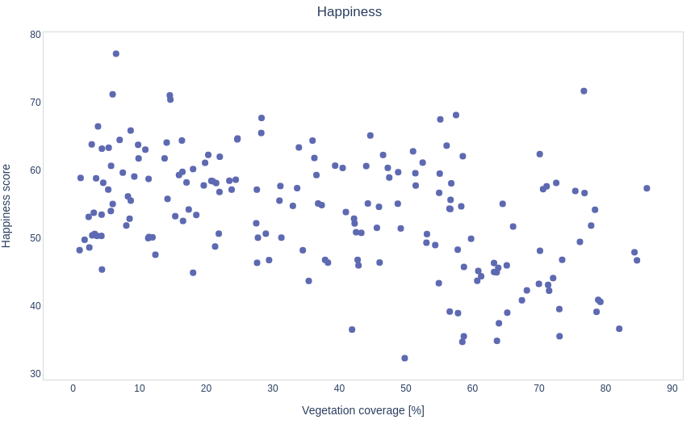
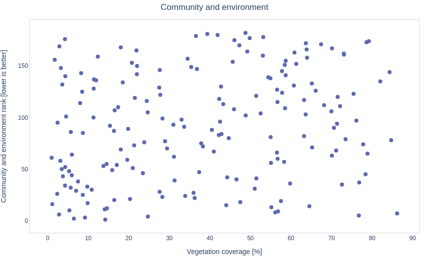
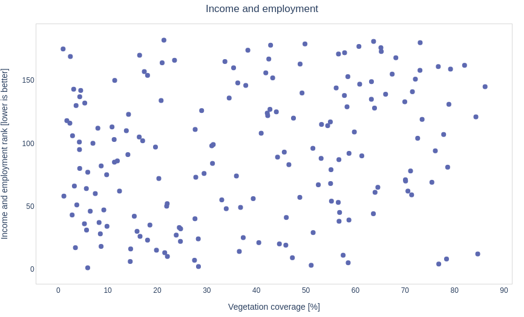
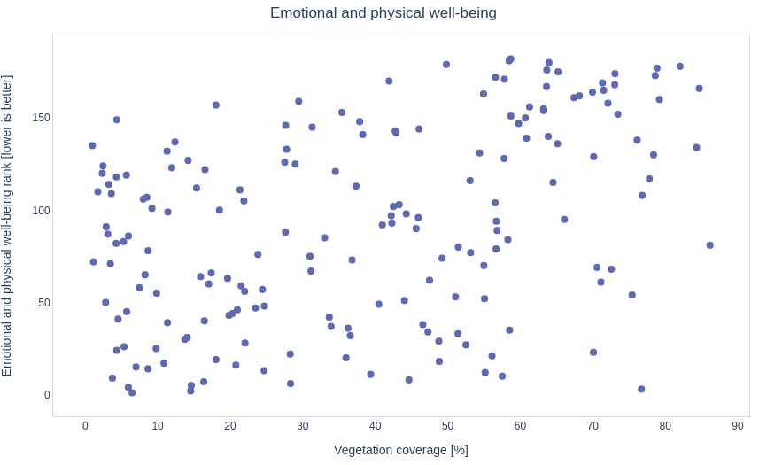

Thomas, Gaute, Sofie, Victor, Trym
- Mål: Måle varmetap fra hus med IR bilder fra satellitt
- Komplikasjon: For lav oppøsning (100m per pixel)
- Byttet oppgave på landsbydag 5
- Finne polygoner av byer
- Hente ut NDVI fra Sentinel-2
- Regne ut hvor stor andel som er vegetasjon
- Se om det er sammenheng med lykke




Bruke Flutter til å lage en app som kan vise den innsamlede dataen
Bruksområde: